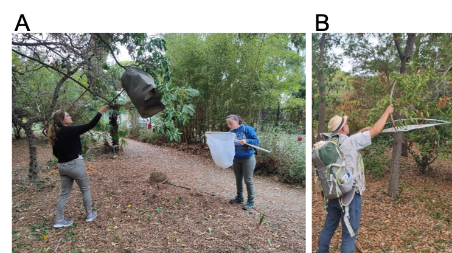
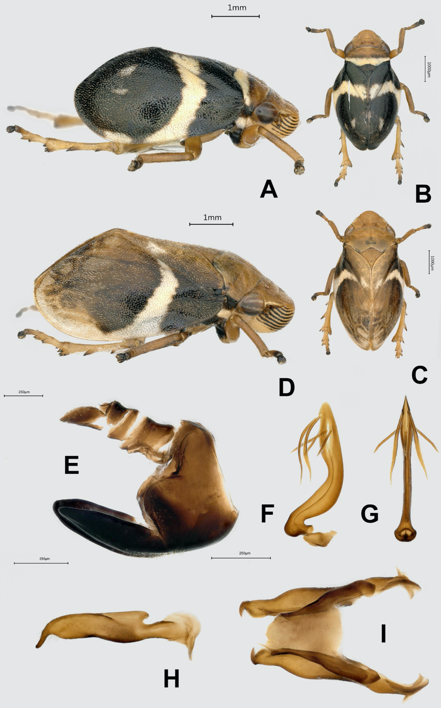

Projet PIV-XF
PIV-XF [Pre-emptive assessment of potential Insect Vectors of Xylella Fastidiosa] porte sur l’évaluation préventive des insectes vecteurs potentiels de Xylella fastidiosa se développant sur des plantes d’origine australienne. Il s’agit d’une une collaboration INRAE-CSIRO European Laboratory. Ce projet est coordonné par J.-P. Rossi, J.-C. Streito (INRAE), V. Lesieur, G. Hunter (CSIRO)
Objectifs
Les objectifs de PIV-XF sont :
- Identifier les vecteurs européens de Xylella fastidiosa qui se nourrissent sur des plantes australiennes introduites en France
- Identifier les insectes potentiellement vecteurs de X. fastidiosa dans différents écosystèmes naturels ou semi-naturels en Australie ainsi que sur des plantes européennes introduites en Australie
Les résultats du projet permettront d’identifier les insectes européens et Australiens représentant un risque de transmission de la bactérie et donc les espèces pour lesquelles une surveillance particulière est requise. Le projet repose sur des missions de terrain en France et en Australie. Les échantillons, les données morphologiques et les barcodes obtenus dans le cadre du projet seront versés dans la base de données arthemis gérée par l’unité CBGP et interrogeable à distance (blast). L’ajout des vecteurs potentiels de X. fastidiosa provenant d’Australie, permettra d’améliorer nos capacités de détection en cas d’incursion de vecteurs potentiels originaires d’Australasie en Europe/France.
Le projet comporte deux volets complémentaires :
- Evaluation des vecteurs Européens présents sur la plante australienne (échantillonnage en France)
- Evaluation des vecteurs potentiels Australiens présents sur plantes australiennes et sur plantes d’origine européenne (échantillonnage en Australie)
Echantillonnage en France
Méthodes
L’échantillonnage des insectes vecteurs de X. fastidiosa présents sur des plantes australiennes cultivées en France a été réalisé à l’Unité Expérimentale de la Villa Thuret (UEVT, INRAE) (Antibes, Alpes-Maritimes, France) dirigée par Gildas Gâteblé. Le jardin botanique de la villa Thuret a été créé en 1857 et est géré par INRAE depuis 1946. Ce jardin comporte un millier d’espèces végétales, dont de nombreuses espèces australiennes. Le jardin ayant été créé en 1857 et sachant que de nombreuses espèces végétales y ont été plantées il y a plusieurs décennies, les insectes capables de s’en nourrir ont une bonne probabilité d’avoir été recrutés. Les insectes cible comprennent des vecteurs potentiels européens connus ainsi que des espèces nouvellement introduites en Europe telles que les Cicadellidae américains Draeculacephala robinsoni Hamilton, 1967.
Organisée avec l’aide de Gildas Gâteblé et Robin Ardito, la mission a eu lieu du 16 au 18 octobre 2023 et a mobilisé Jean-Claude Streito, Marguerite Chartois, Céline Baurreau et Etty Colombel. Les plantes Australiennes présentes dans le jardin ont été listées par Céline Baurreau à partir de l’inventaire des plantes présentes dans le jardin. La majorité des genres de plantes ciblées ont pu être échantillonnés (voir le tableau ci-dessous).
L’échantillonnage s’est étalé sur 2 journées. Chaque plante a été échantillonnée par quatre opérateurs différents en utilisant différentes méthodes (+ LISTE Figure ci-dessous).
Les insectes sont ensuite collectés avec un aspirateur buccal (Figure ci-dessous B) puis conservés dans la Collection Continentale d’Arthropodes INRAE-CBGP, Centre de Biologie pour la Gestion des Populations (Montpellier, France) : https://doi.org/10.15454/D6XAKL. Les identifications sont réalisées par Jean-Claude Streito.

Echantillonnage de l’entomofaune. L’échantillonnage a été réalisé par fauchage (A) et par battage (B).

Echantillonnage de l’entomofaune (suite) A. Echantillonnage par collecte à vue par terre B. Récupération des spécimens par aspiration.
Résultats
L’échantillonnage des zones herbeuses du jardin ont montré que P. spumarius et Neophilaenus spp étaient présents sur le site à la période choisie pour l’échantillonnage.
L’échantillonnage des plantes australiennes a porté sur 14 familles botaniques incluant 31 genres et 57 espèces (voir tableau ci-dessus). Toutes les espèces étaient des plantes ligneuses, des arbustes ou des arbres, car il n’y a pas de plantes herbacées australiennes à la Villa Thuret. Aucun vecteur potentiel de X. fastidiosa n’a été observé sur les plantes australiennes échantillonnées à l’exception d’un spécimen de Philaenus spumarius sur Acacia anceps qui pourrait avoir sauté des plantes herbacées jusqu’à notre filet. Plusieurs autres hémiptères ont été observés et collectés dans le jardin. L’identification est actuellement réalisée par différents spécialistes. Les résultats serviront à compléter l’inventaire de la faune du jardin. Une liste préliminaire est indiquée ci-dessous :
Villa-Thuret 16 octobre 2023
- Aphrophoridae
- Neophilaenus sp. (identification de l’espèce en cours)
- Philaenus spumarius (Linnaeus, 1758)
- Anthocoridae
- Anthocoris nemoralis (Fabricius, 1794)
- Cardiastethus fasciiventris (Garbiglietti, 1869)
- Thaumastocoridae
- Thaumastocoris peregrinus (Carpintero & Dellapé, 2006)
- Tingidae
- Corythucha arcuata (Say, 1832)
- Monosteira unicostata (Mulsant & Rey, 1852)
- Stephanitis lauri (Rietschel, 2014)
- Coreidae
- Gonocerus sp. (identification de l’espèce en cours)
- Pentatomidae
- Dryadocoris apicalis (Herrich-Schäffer, 1842)
- Rhaphigaster nebulosa (Poda, 1761)
- Sciocoris sideritidis (Wollaston, 1858)
Villa-Thuret 17 octobre 2023
- Aphrophoridae
- Philaenus spumarius (Linnaeus, 1758)
- Cicadellidae
- Hishimonus sp. (identification de l’espèce en cours)
- Anthocoridae
- Anthocoris nemoralis (Fabricius, 1794)
- Cardiastethus fasciiventris (Garbiglietti, 1869)
- Miridae
- Dicyphus bolivari (Lindberg, 1934)
- Reduviidae
- Empicoris brevispinus (Puton in Noualhier, 1889)
- Zelus renardii (Kolenati, 1857)
- Thaumastocoridae
- Thaumastocoris peregrinus (Carpintero & Dellapé, 2006)
- Pentatomidae
- Rhaphigaster nebulosa (Poda, 1761)
- Rhopalidae
- Maccevethus sp. (identification de l’espèce en cours)
Echantillonnage en Australie
Méthodes
L’échantillonnage de l’entomofaune Australienne a été réalisé en Nouvelle-Galles du Sud (Sydney, Canberra et Orange) dans deux situations :
- Dans le milieu naturel
- Dans des jardins botaniques où des espèces végétales européennes sont maintenues Au total, 35 sites et 158 échantillons ont été collectés, représentant un total de 1700 spécimens. Différents ordres d’insectes ont été collectés, mais la majorité des spécimens appartient à l’ordre des Hémiptères. Les méthodes d’échantillonnage et de traitement des échantillons sont identiques à ce qui a été décrit plus haut.
Résultats
Parmi les insectes collectés, 43 spécimens appartenant à 3 familles différentes (Aphrophoridae, Machaerotidae and Cicadidae) sont des vecteurs potentiels de X. fastidiosa. Ils sont actuellement en cours d’analyse.
Echantillonnage dans les jardins botaniques
Aucun vecteur potentiel n’a été capturé sur des plantes européennes au Royal Botanical Gardens de Sydney et au Camberra Botanical Garden. Il faut cependant rester prudent avec ces résultats, car aucun insecte potentiellement vecteur n’a été observé durant les 5 heures de collecte, ni sur plantes australiennes, ni sur plantes européennes.
Echantillonnage en milieux naturels et semi-naturels
Les milieux où l’on trouve facilement des vecteurs de X. fastidosa en Europe ont été échantillonnés dans différentes localités (strate herbacée des bords de routes et des champs, des jardins et des friches, …). L’espèce Bathyllus albicinctus est très fréquente dans la strate herbacée (Canberra, Orange). Une nymphe a également été trouvée sur des Poaceae dans la forêt domaniale de Mullions Range près d’Orange ; elle a mué quelques minutes après la collecte. Bathyllus albicinctus (figure ci-dessous) est une espèce fréquente dans le sud de l’Australie et semble assez proche de Philaenus spumarius par sa biologie. Les connaissances disponibles sur cette espèce sont encore assez limitées, mais Trebicki (2023) signale la présence de B. albicinctus dans des oliveraies, des cultures d’agrumes et de vigne où il se nourrit et pourrait donc transmettre la bactérie X. fastidiosa si celle-ci venait à être introduite en Australie.

Bathyllus albicinctus. A. Crachat de coucou (larve) observé sur une Poacée. B. Station d’échantillonnage où l’espèce a été capturée C. Individu adulte D. Nymphe d’une espèce d’Aphrophoridae capturée à Sydney E. Site d’échantillonnage situé à Gunning où une importante population de B. albicinctus a été observée. Photos J.-C. Streito/INRAE

Bathyllus albicinctus. A-B. Mâle C-D. Femelle E-I. Genitalia mâle E. Pygophore F-G. Edeagus H. Paramère I. Ensemble contenant deux paramères. Photos J.-C. Streito/INRAE
Bathyllus albicinctus. A-B. Mâle C-D. Femelle E-I. Genitalia mâle E. Pygophore F-G. Edeagus H. Paramère I. Ensemble contenant deux paramères. Photos J.-C. Streito/INRAE
Conclusions
Les résultats préliminaires obtenus lors de ce projet et les échanges avec les collègues australiens suggèrent que la situation en Australie est assez similaire à celle de l’Europe avant l’introduction de X. fastidiosa : certaines espèces australiennes, de par leur régime alimentaire, leur répartition et les habitats qu’elles fréquentent, pourraient jouer le même rôle que P. spumarius en Europe, c’est-à-dire être des vecteurs suffisamment efficaces pour provoquer une épidémie de Xf dans certaines régions et sur certaines cultures. C’est le cas de B. albicinctus collecté lors de la mission.
Références
- Trebicki P., 2023. Potential vectors of exotic Xylella fastidiosa in Australia. Internal communication online. https://www.plantbiosecuritydiagnostics.net.au/app/uploads/2024/01/02-XF-2023-Adelaide-Trebicki_upload.pdf
Annexe : liste des espèces de vecteurs potentiels de la bactérie Xylella fastidiosa présents en France
Les espèces Philaenus spumarius et Neophilaenus campestris sont des vecteurs effectifs. Les capacités de vection des autres espèces n’ont pas été testées en laboratoire.
- Aphrophoridae
- Philaenus spumarius (Linnaeus, 1758)
- Neophilaenus albipennis (Fabricius, 1798)
- Neophilaenus campestris (Fallén, 1805)
- Neophilaenus exclamationis (Thunberg, 1784)
- Neophilaenus infumatus (Haupt, 1917)
- Neophilaenus lineatus (Linnaeus, 1758)
- Neophilaenus longiceps (Puton, 1895)
- Neophilaenus minor (Kirschbaum, 1868)
- Aphrophora alni (Fallén, 1805)
- Aphrophora corticea (Germar, 1821)
- Aphrophora major Uhler, 1896
- Aphrophora pectoralis (Matsumura, 1903)
- Aphrophora salicina (Goeze, 1778)
- Lepyronia coleoptrata (Linnaeus, 1758)
- Cercopidae
- Cercopis arcuata (Fieber, 1844)
- Cercopis intermedia (Kirschbaum, 1868)
- Cercopis sanguinolenta (Scopoli, 1763)
- Cercopis vulnerata (Rossi, 1807)
- Haematoloma dorsata (Ahrens, 1812)
- Cicadellidae
- Cicadella lasiocarpae (Ossiannilsson, 1981)
- Cicadella viridis (Linnaeus, 1758)
- Evacanthus acuminatus (Fabricius, 1794)
- Evacanthus interruptus (Linnaeus, 1758)
- Errhomenus brachypterus (Fieber, 1866)
- Graphocephala fennahi (Young, 1977)
- Draeculacephala robinsoni (Hamilton, 1967)
- Ledra aurita (Linnaeus, 1758)
- Cicadidae
- Cicadinae
- Cicada orni (Linnaeus, 1758)
- Cicadatra atra (Olivier, 1790)
- Lyristes plebejus (Scopoli, 1763)
- Cicadettinae
- Cicadetta brevipennis litoralis (Puissant & Hertach, 2016)
- Cicadetta cantilatrix (Sueur & Puissant, 2007)
- Cicadetta cerdaniensis (Puissant & Boulard, 2000)
- Cicadetta fangoana (Boulard, 1976)
- Cicadetta montana (Scopoli, 1772)
- Cicadetta petryi (Schumacher, 1924)
- Cicadetta sibillae Hertach & Trilar, 2015
- Dimissalna dimissa (Hagen, 1856)
- Oligoglena tibialis (Panzer, 1798)
- Tettigettalna argentata (Olivier, 1790)
- Tettigettula pygmea (Olivier, 1790)
- Cicadinae
- Tibicinae
- Tibicina corsica corsica (Rambur, 1840)
- Tibicina corsica fairmairei (Boulard, 1984
- Tibicina garricola (Boulard, 1983
- Tibicina haematodes (Scopoli, 1763)
- Tibicina nigronervosa (Fieber, 1876)
- Tibicina quadrisignata (Hagen, 1855)
- Tibicina stevensi (Krynicki, 1837)
- Tibicina tomentosa (Olivier, 1790)